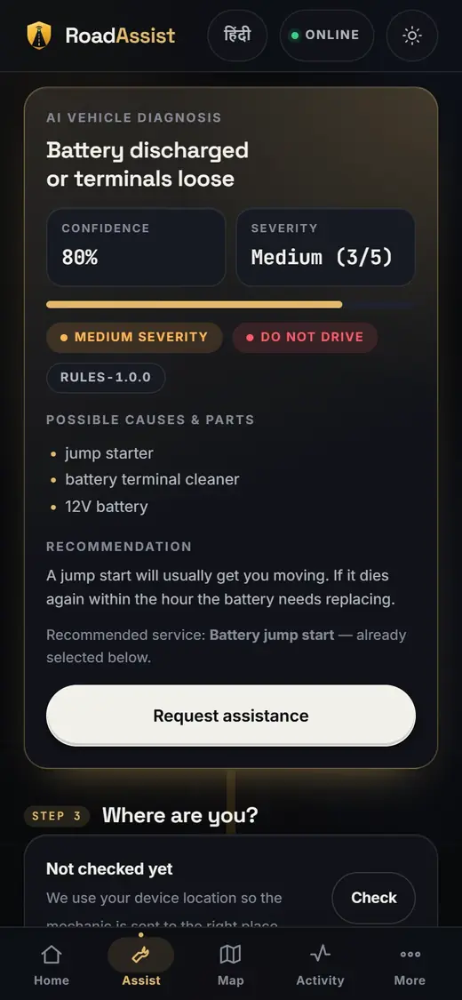
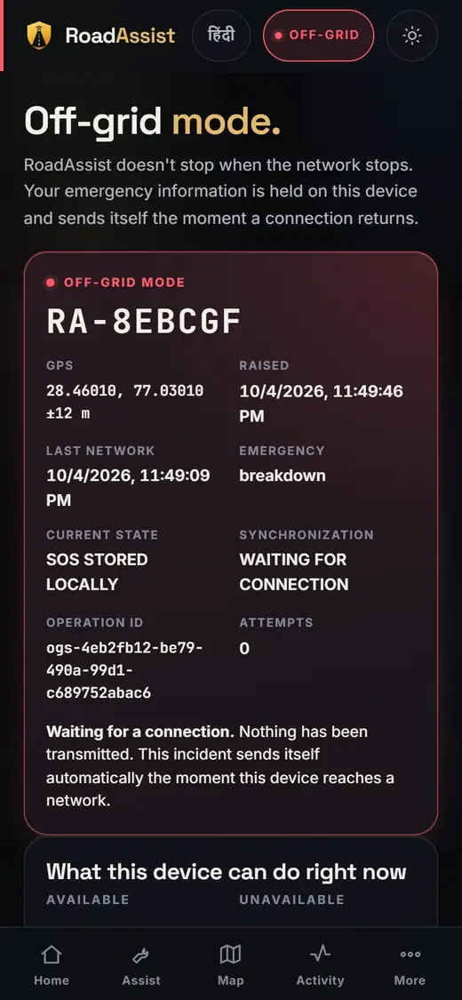
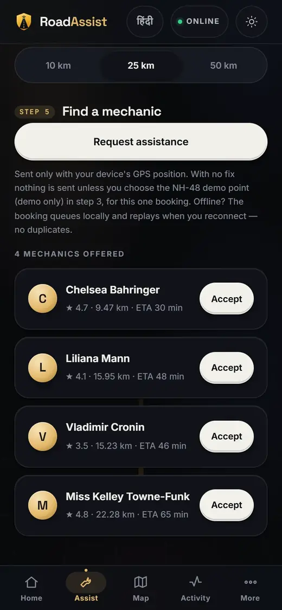
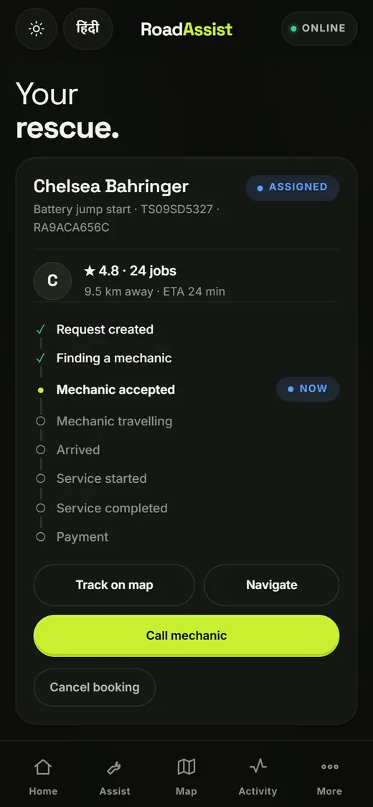

Roadside assistance
Describe the fault, get a likely cause, then dispatch the nearest verified mechanic — ranked on real distance and ETA.
A breakdown rarely happens where the coverage is good. RoadAssist dispatches a verified mechanic, raises an emergency, and keeps working when the network is gone — holding what you did on the device and sending it the moment a bar comes back. On a feature phone it works over plain SMS, with no app at all.
Every layer in live 3DThe whole platform as one model, from the screens at the top to the database at the bottom. It turns on its own: open a layer to see what is in it, or press play to watch a real request travel through every one. The readings on it come from this server.
Each one stands on its own. None of them needs the others to be online.
Describe the fault, get a likely cause, then dispatch the nearest verified mechanic — ranked on real distance and ETA.
A deliberate press-and-hold, never a pocket tap. It falls down a ladder: data, then SMS, then the dialer for 112.
Road-damage detections plotted along a corridor, with per-segment health an authority can download and act on.
A feature phone texts MADAD and the platform answers. The interface is offered in 8 Indian languages.




A rules engine names a likely cause, a severity, and whether the vehicle is safe to drive. It is advice, not a dispatch.
On screen: the diagnosis — cause, confidence, severity, safety action, engine version.
A GPS fix if the device has one, a typed landmark if it does not. A coordinate that cannot be trusted is refused, never guessed.
On screen: an off-grid SOS — the reference and the GPS fix held on the device until a connection returns.
Ranked by distance, ETA and rating. An offer expires, so a job never sits with someone who has stopped looking.
On screen: the mechanics offered, with distance, ETA and rating.
Every state change is timestamped and attributed. Fares are held to the paisa — never a floating-point rupee.
On screen: tracking — live status, provider, ETA and every state of the booking.
The honest half of offline-first is naming what stops. Nothing that needs the cloud is pretended, and nothing is reported as sent until the server has acknowledged it.
RoadAssist can detect a probable crash, and it will never act on that alone. A prediction waits for a human to confirm it before any responder is sent — an architectural decision enforced by tests rather than by good intentions. Exactly one channel owns a report, so a confirmed SMS is never replayed as a second emergency and two responders are never sent to one person.
All four run against the same live API on this server.
Request help, raise an SOS, track a rescue, pay and rate.
Go on duty, take offers, drive a job through to payment.
Corridor road health, detections, and a downloadable offline snapshot.
Every API call the client makes, with the server's reply — including the SMS path.
Every figure here is measured by a script in this repository and gated in CI, not estimated.
Seven of the eight languages are machine-translated and have not been native-reviewed: the strings exist, the quality is unverified, and those are different claims. The Razorpay checks run separately, against a local stub rather than the real gateway, and are not counted in the 1158.
iOS · Android Auto · IVR · USSD · satellite · mesh networking · Kubernetes · Terraform · autoscaling · multi-zone deployment. The ERSS-112 handoff is stubbed, and the API says so in its own response. The diagnosis is a rules engine, not a trained model, and is never described as one.
The app runs in the browser. Turn the network off mid-journey and watch what it does — that is the part worth seeing.